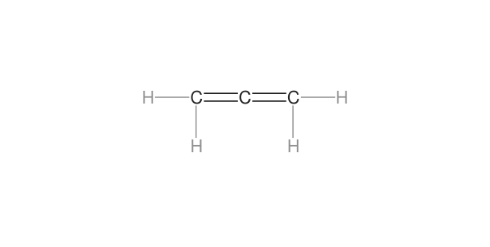
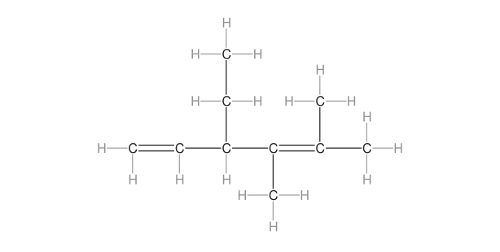
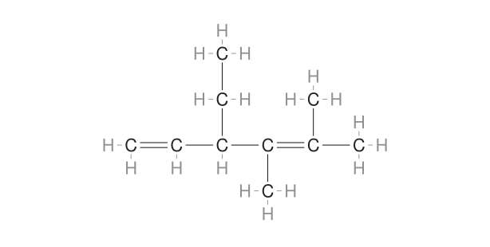
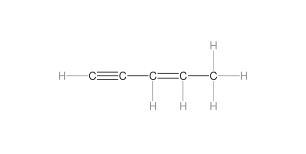
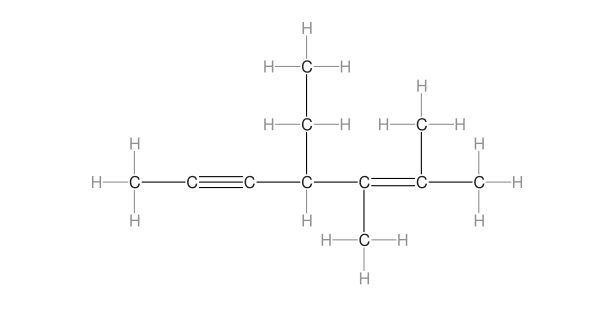
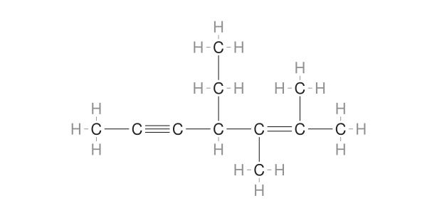

Αλκαδιένια και αλκενίνια · ίδιο πρότυπο ανεπτυγμένων
31 Οκτωβρίου 2026 · Τοπική κύρια έκδοση Namelecule
Ο συγκεντρωτικός ανεξάρτητος Reviewer ολοκλήρωσε τον έλεγχο χωρίς actionable ευρήματα P0/P1/P2/P3. Ο διαγνωστικός περιορισμός παρακάτω παραμένει καταγεγραμμένος.
Εφαρμόστηκαν οι τελικές αναλογίες των αλκανίων σε όλα τα 8 αλκαδιένια και 7 αλκενίνια: C–H 0,3094 και όλοι οι C–C/C=C/C≡C 0,6188 στα MOL. Τα αρχικά μόρια του καθηγητή χρησιμοποιήθηκαν ως πρότυπα της διάταξης. Διατηρούνται οι κατευθύνσεις, οι πολλαπλοί δεσμοί και η γραμμικότητα στα sp άτομα.
Η φωτογραφία του χρήστη ανέδειξε έβδομο αλκενίνιο, το 3-πεντεν-1-ίνιο: η αρχική απογραφή το παρέλειψε λόγω του παλιού συμβόλου [H]. Διορθώθηκε η αναγνώριση στην απογραφή/δοκιμές· το ίδιο το πεδίο [H] διατηρήθηκε στο αρχείο MOL. Προστέθηκε έλεγχος πληρότητας της κατηγορίας.
Αλκαδιένια · προπαδιένιο
Πριν
Μετά
Αλκαδιένια · 3-αιθυλο-4,5-διμεθυλο-1,4-εξαδιένιο
Πριν
Μετά
Αλκενίνια · 3-πεντεν-1-ίνιο
Πριν
Μετά
Αλκενίνια · 4-αιθυλο-2,3-διμεθυλο-2-επτεν-5-ίνιο
Πριν
Μετά
Τι ελέγχθηκε
Όλα τα μόρια στις τρεις μορφές και σε δύο πλάτη: 90 περιπτώσεις πριν και 90 μετά. Οι δομές, τα ονόματα και οι αριθμοί ατόμων διατηρήθηκαν. Δοκιμάστηκαν zoom, αρίθμηση, επισημάνσεις, απόκρυψη/επανεμφάνιση και πραγματικές εξαγωγές PNG.
Αναπαράχθηκαν και τα δύο ενεργά σενάρια: 23 βήματα το καθένα, σε δύο πλάτη, με πρόσθετο προηγούμενο/επόμενο στον ανεπτυγμένο τύπο — 50 καταστάσεις ανά σενάριο, δύο τελικά μοντέλα 3D και δύο έξοδοι στη βιβλιοθήκη. Οι δοκιμές των έξι αλκενινίων έγιναν πριν από την έβδομη προσθήκη και ακολούθησε στοχευμένος έλεγχος του έβδομου· τα προηγούμενα δεδομένα παρέμειναν ίδια.
Στα σωρευμένα αλκαδιένια, το κεντρικό C δεν είχε μονό δεσμό για να προσδιοριστεί το κέντρο του. Ο κοινός μηχανισμός το αναγνωρίζει πλέον από τα μέσα των ελεγμένων παράλληλων γραμμών των διπλών δεσμών. Δεν μετακινεί γραμμές ή άτομα. Τρεις αρνητικές δοκιμές με αλλοιωμένα ζεύγη επιβεβαιώνουν ασφαλή αποχώρηση χωρίς μερική επέμβαση.
Ο έλεγχος παλινδρόμησης καλύπτει τις προηγούμενες κατηγορίες, με ίδιο κοινό πλαίσιο βιβλιοθήκης και 842 προστατευμένα αρχεία πηγής. Διαφορές σε παλιότερες λήψεις viewport διερευνήθηκαν χωριστά και συγκρίθηκαν με σταθερό ίδιο πλάτος· δεν βαφτίστηκαν αλλαγές μορίου. Δεν εκτελέστηκε νέα πλήρης δοκιμή 844 περιπτώσεων μετά από αυτές τις κατηγορίες.
Τα μήκη στα MOL είναι ακριβώς ίσα ανά είδος. Στην οθόνη υπάρχει η μικρή στρογγυλοποίηση του renderer: η ανοχή των δοκιμών υπολογίζεται από δύο native μονάδες και την πραγματική μεγέθυνση. Δεν δηλώνεται τέλεια ισότητα pixel ούτε καθολική εγγύηση λειτουργίας.
Διαγνωστικό υπόλοιπο
Μία αρχική δοκιμή απόλυτης ισότητας δύο διαδοχικών SVG στο στενό πλάτος απέτυχε. Η αρχική δοκιμή δεν αποθήκευε το ζεύγος, επομένως η αιτία δεν έχει τεκμηριωθεί. Με πρόσθετη καταγραφή, η ίδια δοκιμή και 180 συγκρίσεις επανασχεδίασης σε δύο πλάτη και τρία zoom πέρασαν χωρίς διαφορά ή αλλαγή κώδικα εφαρμογής. Η αρχική αποτυχία διατηρείται στα τεκμήρια· δεν δηλώνεται διορθωμένη αστάθεια.
Καταγραφή και επαναφορά
Τοπικές αλλαγές, χωρίς commit ή δημοσίευση. Δεν άλλαξαν core, άλλες μορφές, 3D, σενάρια JSON ή React. Η επιλεκτική επαναφορά των 12 αρχείων δοκιμάστηκε σε απομονωμένο αντίγραφο και αρνείται να καλύψει νεότερη αλλαγή.
Περιβάλλον: Firefox σε αυτό το Mac, με responsive emulation στα 390 px. Δεν ελέγχθηκαν άλλοι browsers ή πραγματικές κινητές συσκευές. Η υπάρχουσα εξάρτηση j2s στο 3D παραμένει· δεν πρόκειται για πιστοποίηση πρόβας συνεδρίου ή offline πακέτο.
Σύνοψη ελέγχων · Ανεξάρτητος έλεγχος · Σημείο επαναφοράς · Namelecule